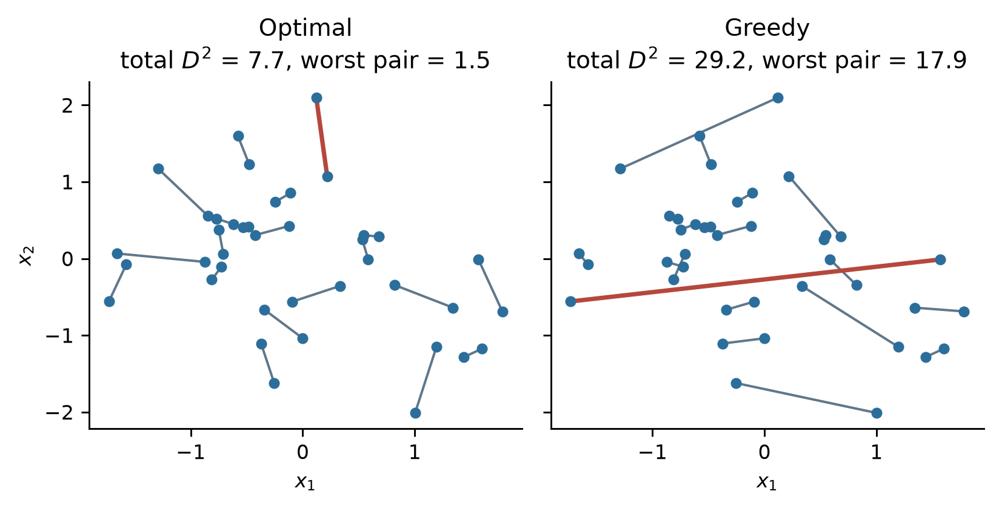

Pairwise matching
matching
design
inference
Pairing units before you randomise: when it beats rerandomization, why the pairing has to be solved properly, and how to analyse the result.
You have a few hundred units and you want two halves that look alike. Rerandomization reaches that by discarding splits that come out badly balanced. Pairwise matching reaches it by construction. Pair every unit with its closest counterpart in covariate space, then flip a coin inside each pair. Each arm then holds exactly one unit from every pair, so the two halves are matched unit by unit rather than only on average.
This article answers three questions. Does matching gain you more than rerandomization? Why does the pairing step have to be solved properly? And how do you analyse the experiment afterwards?
What it does
Closeness between two units is measured with the Mahalanobis distance, which avoids double-counting correlated covariates. With \(N\) units and \(k\) covariates:
- Compute the covariate covariance matrix \(S\) once, from all \(N\) units.
- For every pair of units \(i\) and \(j\), compute the squared distance between them: \[ D^2(i,j) \;=\; (x_i - x_j)^{\!\top} S^{-1} (x_i - x_j). \]
- Choose the \(N/2\) pairs that minimise the total within-pair distance, subject to covering every unit exactly once.
- Inside each pair, flip a coin to decide which unit goes to treatment.
Step 2 is the same quadratic form as in the Mahalanobis article, applied to the gap between two units instead of the gap between a unit and the mean. Everything from there carries over: affine invariance, correlated columns counted once, and the one-hot-with-a-baseline or pseudo-inverse treatment of categorical covariates.
Step 4 is what keeps this a randomised experiment. Each pair contributes one independent coin flip, so a sample of \(N\) units has \(2^{N/2}\) possible assignments. At \(N = 400\) that is about \(1.6 \times 10^{60}\). Assigning deterministically within pairs, say the higher-spending unit always to control, would leave a single possible split and no basis for a \(p\)-value.
Step 3 is the part that goes wrong in practice.
The pairing is an optimisation problem, not a sorting problem
The obvious way to form pairs is greedy. Take the two closest units anywhere in the sample, set them aside as a pair, then repeat on what is left. It is short to write and it does not produce the minimum.
The worst pair is highlighted in each panel. Greedy matching strands the units it leaves until last, and a stranded pair is a pair whose covariate gap the coin flip cannot undo. That gap goes straight into the variance of the treatment effect estimate, so the tail of the distance distribution matters more than its total.
How much greedy costs depends on the sample. Forty units is a hard case for it, and it runs up 3.8 times the total distance and 12 times the worst pair. At a few hundred units the totals come much closer together, while the worst pair stays several times further apart.
| Sample | Total D2, optimal | Total D2, greedy | Worst pair, optimal | Worst pair, greedy |
|---|---|---|---|---|
| N = 100, k = 4 | 63.0 | 82.1 (+30%) | 5.47 | 10.41 (1.9×) |
| N = 200, k = 4 | 78.5 | 113.2 (+44%) | 4.70 | 14.80 (3.1×) |
| N = 200, k = 8 | 409.1 | 505.0 (+23%) | 10.20 | 54.08 (5.3×) |
The correct problem is a minimum-weight perfect matching on a general graph. Every unit is a vertex, every pair of units is an edge weighted by \(D^2(i,j)\), and you want the cheapest set of edges that touches each vertex once. Edmonds’ blossom algorithm solves it exactly in \(O(N^3)\).
Two points of confusion are worth clearing up. First, this is not the assignment problem, and the Hungarian algorithm does not apply. That algorithm matches one set to a different set, treated units to control units. Here there is a single pool and any unit may pair with any other, so the graph is not bipartite. Greevy et al. (2004) introduced the non-bipartite version for exactly this design. Second, the problem is solved rather than approximated, so there is no tuning to do and no reason to settle for greedy. In Python it is one call in networkx; in R it is the nbpMatching package.
Does it gain more than rerandomization?
Both designs are aiming at the same thing, so the comparison is worth making directly. The table below fixes one sample of 400 units with four covariates, then repeats the assignment 4,000 times under each design and measures how much the estimate moves around.
| Outcome model | R2, any function of X | R2, linear in X | Rerandomization, pa = 1% | Pairwise matching |
|---|---|---|---|---|
| Linear in the covariates | 0.64 | 0.64 | 0.38 | 0.41 |
| Non-linear in the covariates | 0.64 | 0.06 | 0.95 | 0.51 |
The two \(R^2\) columns explain the result. Both outcome models leave the same share of variance unexplained once you allow any function of the covariates, so both offer the same gain in principle. They differ in how much of that signal a linear function of the covariates can reach: 0.64 against 0.06.
That column is the one rerandomization is limited by. A threshold on \(M\) constrains the difference in covariate means, which pins down the linear part of the response and leaves the rest untouched. Matching is limited by the other column. The two units in a pair sit close together in covariate space, so any function of the covariates takes nearly the same value on each side of the coin flip, whether that function is linear or not. Matching therefore performs about the same in both rows, while rerandomization collapses from 0.38 to 0.95.
NoteChecking both numbers against theory
The variance ratio under rerandomization is \(1 - (1 - v_a)R^2\), with \(v_a\) the shrinkage factor from the rerandomization article and \(R^2\) the linear one. At \(k =\) 4 and \(p_a = 1\%\), \(v_a =\) 0.049, so the formula predicts 0.39 for the linear model against 0.38 measured, and 0.94 for the non-linear model against 0.95 measured. Splitting the outcome into its linear fit and the residual shows the mechanism directly: under rerandomization the variance of the fitted part shrinks by a factor of about \(v_a\), and the variance of the residual part does not move.
For matching, a perfectly matched sample would reduce the variance to the share of outcome variance the covariates do not explain, which is \(1 - R^2 =\) 0.36 here against 0.51 achieved. The shortfall is the price of pairs that are close but not identical.
The two designs differ in what you can do about a disappointing number. Tightening the threshold drives \(v_a\) towards zero, so rerandomization has a dial. Matching has none: the within-pair distances are a property of the sample, and once the matching is optimal there is nothing further to spend. What limits it is covariate density, which is why matching improves as \(N\) grows and degrades as \(k\) grows.
Bruhn and McKenzie (2009) reached a compatible conclusion from a different direction. Surveying development field experiments, they report that at samples of 300 or more the common designs balance future outcomes about equally well, and that pairwise matching and stratification come out ahead in smaller samples and for highly persistent outcomes. Their rerandomization comparison is to rerandomization as commonly practised, with few covariates and a loose threshold.
TipWhich to reach for
Matching is the safer default when you cannot describe the outcome as roughly linear in the covariates, and when the sample is small enough that a few awkward units could land on one side. Rerandomization is the better fit when the covariates enter the response roughly linearly, when you want a dial you can tighten, and when the pairing cannot survive to the analysis stage. The next section covers that last condition, which is easy to overlook.
Odd numbers, and units with nothing close to them
A perfect matching needs an even \(N\) and tolerates no exceptions, so two practical cases need handling.
For odd \(N\), or to drop units that match badly, add sinks. A sink is a phantom unit placed at distance zero from every real unit and at infinite distance from other sinks. Whichever real unit gets matched to a sink is excluded from the experiment. One sink absorbs an odd unit. Adding \(m\) sinks excludes the \(m\) units that were most expensive to pair, which is the cleanest way to exclude the units whose matches would have been worst.
A caliper sets a maximum acceptable within-pair distance. Implementing it by raising the weight of long edges can leave a problem with no feasible solution, so the usual route is a caliper enforced through sinks: make a sink cheaper than any pairing beyond the cap, and units with no acceptable partner drop out by themselves. Every unit you exclude narrows what the experiment covers, so record how many and which ones.
Analysing a matched experiment
The point estimate needs no special treatment. Averaging the within-pair differences and taking the plain difference in group means are the same arithmetic, because every pair puts one unit in each arm. There is no way to forget the matching when forming the estimate.
The standard error is a different matter.
| Quantity | Value | 95% CI coverage |
|---|---|---|
| True spread of the estimate across assignments | 0.1253 | |
| Reported SE, two-sample t-test | 0.1748 | 99.3% |
| Reported SE, within-pair differences | 0.1249 | 94.9% |
A two-sample \(t\)-test computes the standard error from the within-arm variances. Under this design each arm contains one unit from every pair, so each arm spans the full covariate range and its variance is close to the variance of the whole sample. That calculation returns roughly the value it would have returned under plain randomisation, while the estimate itself now moves around far less. The interval is too wide by a factor of 1.40, and its coverage is 99.3% instead of 95%.
Differencing within pairs fixes it. The within-pair difference is the unit of analysis, its spread already reflects how closely the pairs were matched, and the resulting interval has 94.9% coverage. A regression of the outcome on treatment plus a fixed effect for each pair is the same calculation and gives the same standard error. The cost is degrees of freedom, \(N/2 - 1\) rather than \(N - 2\), which is minor at a few hundred units.
The upper bound on what this is worth is set by the covariates. For a perfectly matched sample the variance of the estimate falls to the share of outcome variance the covariates do not explain, so the naive variance is too large by at most \(1/(1 - R^2)\) and the naive standard error by at most \(1/\sqrt{1 - R^2}\). Here \(R^2\) is 0.64, giving a ceiling of 2.81 on the variance and 1.68 on the standard error, against the 1.95 and 1.40 realised. Measured as variance removed rather than as a ratio, the matching captured 76% of what a perfect matching would have removed.
A conservative interval is not always a safe one
Calling the two-sample interval conservative is accurate but incomplete. It does not follow that the only consequence is lost precision.
| True effect | Plain randomisation | Matched, two-sample SE | Matched, within-pair SE |
|---|---|---|---|
| 0.00 | 5% | 1% | 5% |
| 0.14 | 13% | 5% | 20% |
| 0.25 | 29% | 22% | 51% |
| 0.35 | 51% | 53% | 79% |
| 0.45 | 73% | 80% | 95% |
| 0.55 | 88% | 95% | 99% |
Read the middle column against the left one. At small effect sizes the matched design analysed with a two-sample standard error rejects less often than plain randomisation does, and the ordering only reverses once the effect is large enough. A test statistic that is both smaller in spread and centred below the critical value crosses that value less often, so the tighter estimate works against you until the effect is big enough to clear the bar on its own. Bruhn and McKenzie report the same effect: failing to account for the randomisation method gives tests of the wrong size, and can give less power than a plain random draw would have.
The right column is what the design was for.
WarningThe pairing has to survive to the analysis
Matching moves its gain into the analysis stage, where it needs the pair labels to claim it. If the data reaches you aggregated, say a count and a sum per arm per day, the pair structure is gone and the only standard error you can compute is the conservative one. Store the pair identifier alongside the assignment at the point you randomise, and carry it through every table that follows.
Rerandomization does not share this exposure, because a strict threshold banks most of its gain at the design stage. If you know the analysis will run on aggregates, that is a point in favour of a threshold over pairs.
TipWhat to do
Pair on the covariates you have reason to believe predict the outcome, solve the matching exactly, keep the pair identifier, and analyse within pairs. Matching on covariates that do not predict the outcome spends degrees of freedom and returns nothing.
References
- Bruhn, M. and McKenzie, D. (2009). In pursuit of balance: randomization in practice in development field experiments. American Economic Journal: Applied Economics, 1(4), 200–232.
- Edmonds, J. (1965). Paths, trees, and flowers. Canadian Journal of Mathematics, 17, 449–467.
- Greevy, R., Lu, B., Silber, J. H. and Rosenbaum, P. (2004). Optimal multivariate matching before randomization. Biostatistics, 5(2), 263–275.
- Lu, B., Greevy, R., Xu, X. and Beck, C. (2011). Optimal nonbipartite matching and its statistical applications. The American Statistician, 65(1), 21–30.
- Morgan, K. L. and Rubin, D. B. (2012). Rerandomization to improve covariate balance in experiments. The Annals of Statistics, 40(2), 1263–1282.